Elektronische und elektrotechnische Baukomponenten
Bauteile aus dem Lager an der Hohlstrasse — auch einzelne Stücke, nicht nur Grossmengen.
Die Firma Pusterla Elektronik AG befasst sich seit mittlerweile über 60 Jahren mit dem Handel und Vertrieb von elektronischen und elektromechanischen Baukomponenten, Video- und Audiotechnik, Sicherheitstechnik, Computer und Computer-Zubehör, Netzwerktechnik, Veranstaltungstechnik, Licht-Effekt-Technik, Hausinstallationstechnik, Modellbau und vielem mehr.
Ohne Pusterla bewegt sich kein Elektron in Zürich und Umgebung.
Ein Handels- und Dienstleistungsunternehmen für Firmen und Privatkundschaft in Zürich. Das sind unsere Geschäftsbereiche — so, wie wir sie seit Jahrzehnten führen.
Bauteile aus dem Lager an der Hohlstrasse — auch einzelne Stücke, nicht nur Grossmengen.
Stecker, Schalter, Klemmen und Verbindungstechnik für den Aufbau und die Reparatur.
Von der Stereoanlage über Mikrofone bis zur Videokonferenz-Anlage.
Überwachungskameras, Aufzeichnung, Zutrittskontrolle, Alarmanlagen und Gebäudeschutz.
Systembeleuchtung, LED-Streifen, Leuchtmittel und Beleuchtungszubehör.
Licht und Bühne, Live-Technik, DJ-Equipment und Beschallung.
PC-Komponenten, Notebooks, Monitore, Drucker, Zubehör und Software.
Switches, Router, WLAN, Verkabelung, Glasfaser und Serverschränke.
RC-Modelle, Fernsteuerungen, Antriebe, Ersatzteile und Elektronik für Robotik.
Gebäudetechnik, Dosen und Schalter, Verteilung, Schaltschrank und Kabelmanagement.
Fachbücher, Produktkataloge und unsere eigenen Unterlagen zu Bausätzen und Halbleitern.
Elektrik und Zubehör rund ums Fahrzeug.
Unser Lager umfasst 938'116 Artikel von rund 15'400 Herstellern. Im Onlineshop finden Sie einen grossen Teil davon. Produkte, die in den Kategorien aufgeführt, aber noch nicht angezeigt werden, sind meistens schon ab Ladenlokal Zürich verfügbar. Sonderposten und Schnäppchen gibt es nur im Laden an der Kernstrasse.
Suchen Sie direkt in unserem Onlineshop — mit der Suche, die dort schon funktioniert:
Die Suche öffnet unseren bestehenden Onlineshop pusterlacom.ch in einem neuen Fenster. Wenn Sie nichts finden: rufen Sie an, wir haben es oft trotzdem.
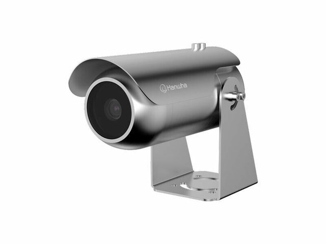
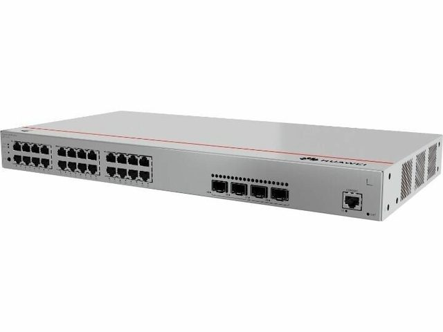
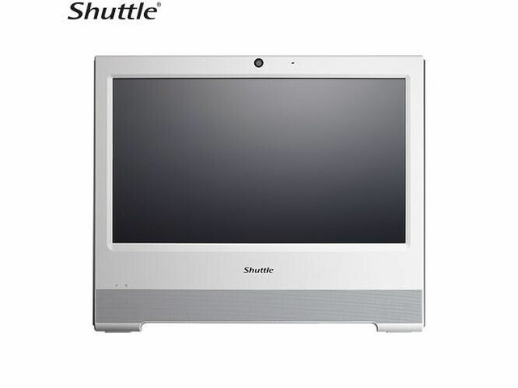
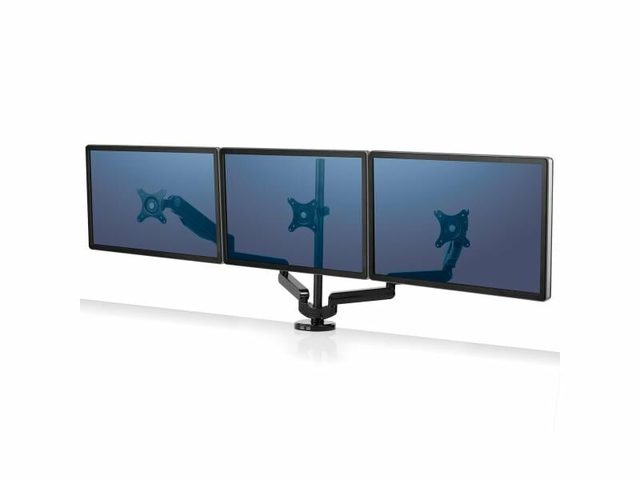
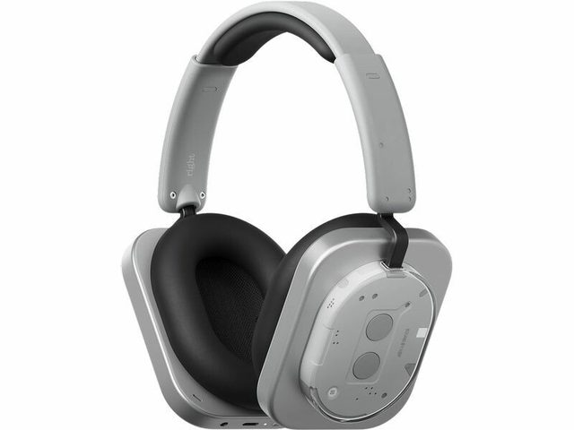
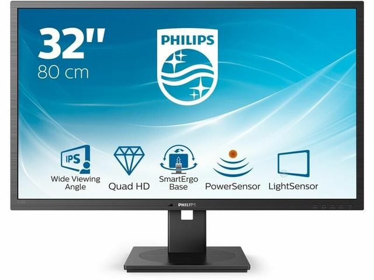
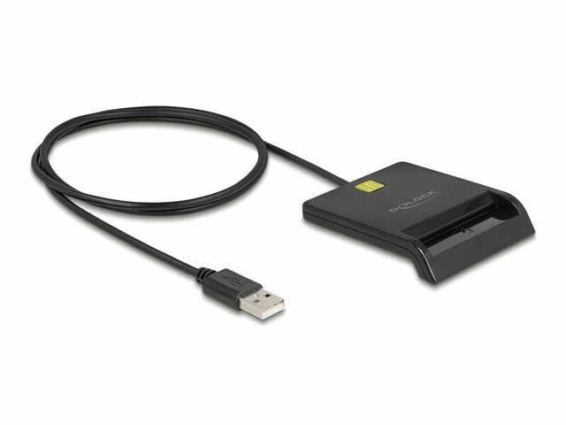
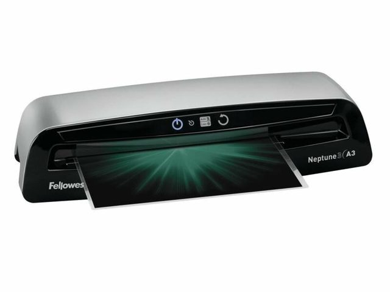
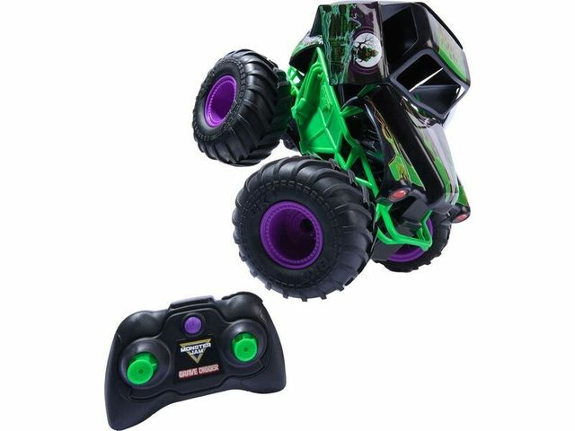
Zusätzlich bieten wir Ihnen umfassende Dienstleistungen — bis hin zu Spezialanfertigungen, Reparaturen und Neuentwicklungen zu attraktiven Konditionen.
Sie sprechen bei uns direkt mit einem Techniker — nicht mit einem Callcenter. Bringen Sie das Gerät oder das Muster vorbei, dann sehen wir es uns an.
«Ich brauchte für ein teures, empfindliches Elektrogerät einen ungewöhnlichen Netzadapteranschluss. Die Mitarbeiter im Laden haben das Ende des Adapters abgeschnitten und den richtigen Anschluss an das Stromkabel gelötet. Dann testeten sie das Gerät … Alles innerhalb von etwa 6 Minuten.»
Eine Auswahl der Hersteller, die wir führen. Wenn Sie eine Marke hier nicht finden, fragen Sie trotzdem: bei 15'400 Herstellern ist die Liste nie vollständig.
Ein Ladengeschäft für den privaten und den gewerblichen Bedarf — seit über 60 Jahren.
Vom Ersatzteil fürs eigene Gerät bis zum kompletten Bausatz. Auch einzelne Stücke, ohne unnötige Mengen.
Bestellung rund um die Uhr im Onlineshop oder direkt im Laden — und eine Beratung, die die Bauteile wirklich kennt.
Für den gewerblichen Bedarf: Ersatzteile, Verbrauchsmaterial, Werkstattbedarf und Kleinmengen.
Sie müssen keine 100 Widerstände kaufen, wenn Sie drei brauchen. Das ist bei uns normal.
Sie finden unser Ladenlokal an der Ecke Kernstrasse 55 (Kreuzung zur Hohlstrasse 52), in der Nähe des Helvetia-Platzes, inmitten von Zürich. Wir freuen uns auf Ihren Besuch.
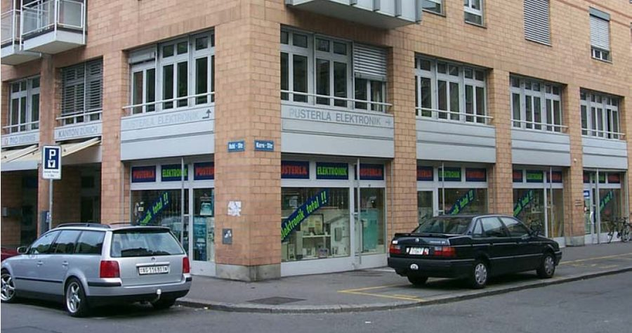
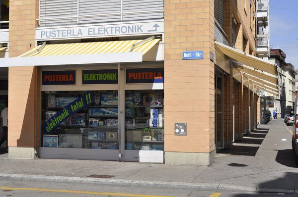
Rufen Sie an, kommen Sie vorbei oder schreiben Sie uns. Am schnellsten geht das Telefon.
| Montag bis Freitag | 09.00 – 18.30 Uhr durchgehend |
|---|---|
| Samstag | 09.00 – 16.00 Uhr durchgehend |
| Sonntag | geschlossen |
Achtung — dies ist ein Entwurf. Das Formular versendet noch keine Nachricht. In der endgültigen Website geht es an die Adresse info@pusterla.ch. Bis dahin rufen Sie uns bitte an unter 044 241 56 77.